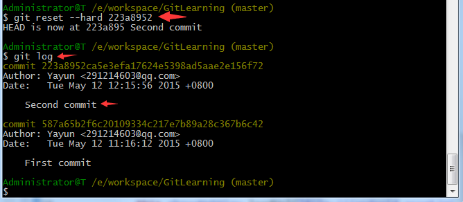

上一章我们了解了如何提交代码，下面我们研究一下更多的功能。
忽略文件
有些时候，你必须把某些文件放到Git工作目录中，但又不能提交它们，例如我们都了解Android目录结构：bin目录和gen目录下的文件都是会自动生成的，我们不应该将这部分文件添加到版本控制当中，否则有可能会对文件的自动生成造成影响，那么如何实现此效果呢？
Git提供了一种可配性很强的机制来允许用户将指定的文件或者目录排除在版本控制之外，它会检查代码仓库的根目录下是否存在一个名为.gitigore的文件，如果存在的话就去一行行读取这个文件的内容，并把每一行指定的文件或目录排除在版本控制之外。注意.gitignore中指定的文件或目录是可以使用“*”通配符的。
现在，我们在项目根目录下创建一个名为 .gitignore的文件：
然后编辑这个文件的内容，输入命令：
vi .gitignore
然后按i键进入编辑模式，输入如下：
然后我们按Esc键进入命令模式，输入命令：
:wq
保存并退出！此时我们查看.gitignore文件：
可以看到我们输入的内容已经保存到.gitignore文件之中，这样就表示把bin目录和gen目录下的所有文件都忽略掉，从而使它们不会加入到版本控制之中。排除这两个目录以后，我们可以重新对项目进行一次提交：
查看修改内容
输入如下命令：
红色部分提示我们再上一次提交之后项目中文件的变动。那么如何才能看到更改的内容呢？这就需要借助diff命令了，如图：
绿色部分代表修改后的内容变化。按Q键可以退出当前模式。
撤销未提交修改
有些时候进行一些改动之后，程序不能正常运行了，这时我们也不要着急，因为只要代码还没有添加，所有的修改内容都是可以撤销的。例如，我们先查看一下修改的内容：
我们可以键入命令：
git checkout src/com/yayun/gitlearning/StartActivity.java
此时我们再观察一下变化：
我们发现StartActivity.java中变化的内容已经没有了，不过，此命令只适用于没有执行过add命令的文件，如果某个文件已经被添加过了，此命令就无效了。遇到被添加过这种情况怎么办呢？难道没有后悔药了吗？当然不是，我们应该对其取消添加，然后才可以撤回提交。取消添加使用的是reset命令，将文件重新变回未添加状态，此时就可以再次使用checkout命令将修改的内容进行撤销了。一系列操作如下：
查看提交记录
经过这个项目几个月的开发之后，我们可能已经提交执行上百次了，这个时候估计你早就忘了每次提交修改了哪些内容了。不过没关系，忠实的Git一直帮我们默默的记录着呢！我们可以使用log命令来查看历史提交信息，用法如下：
第一行commit 后面一串数字是该记录的id,第二行是我们用户信息，第三行是提交的时间，最后一行是我们提交的描述信息，我们可以看到我们一共提交过两次。如果嫌输出信息太多，看得眼花缭乱的，可以试试加上--pretty=oneline参数：

搭上时光机（版本回退）
好了，现在我们启动时光穿梭机，准备把项目回退到上一个版本，也就是“First commit”的那个版本，怎么做呢？
首先，Git必须知道当前版本是哪个版本，在Git中，用HEAD表示当前版本，也就是最新的提交"Second commit",上一个版本就是HEAD^，上上一个版本就是HEAD^^，当然往上100个版本写100个^比较容易数不过来，所以写成HEAD~100。
现在，我们要把当前版本“Second commit”回退到上一个版本“First commit”，就可以使用git reset命令：
此时Eclipse会弹出对话框：
此时点击确定就可以回到“First commit”版本。此时再用git log 命令已经看不到“Second commit”版本，这时你又后悔了，又想回到“Second commit”，那么还有办法呢？当然有，我们可以顺着窗口往上找到“Second commit”的id,然后输入命令：
哈哈，我胡汉三又回来了！（注：此处id号没必要写全，前几位就可以了，Git会自动去找。）
在Git中，总是有后悔药可以吃的。当你用 git reset --hard HEAD^回退到“First commit”版本时，再想恢复到“Second commit”，就必须找到“Second commit”的commit id。Git提供了一个命令git reflog用来记录你的每一次命令：
最前面的数字就是版本id号。